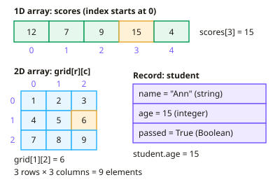

GCSE Computer Science · Topic 7
Data structures, subroutines and robust programs
Data structures, subroutines and robust programs is about organising data and writing code that is reliable and easy to maintain.
We will use arrays and records, manipulate strings, generate random numbers and read and write files.
Then we write subroutines with parameters and local variables, validate input, test thoroughly, and use I D E tools.
- 6 subtopics
- 179 questions
- Free: 7.1 notes and 10 questions
In this topic
- 7.1Arrays (1D and 2D) and recordsFree below · 26 questions
- 7.2String manipulation, random numbers and file handlingOpen in Full Marks · 27 questions
- 7.3Subroutines: functions, procedures, parameters and local/global scopeOpen in Full Marks · 26 questions
- 7.4Defensive design: input validation, sanitisation, authentication and maintainable codeOpen in Full Marks · 33 questions
- 7.5Syntax, logic and runtime errors, and designing test plans (normal, boundary, invalid, erroneous data)Open in Full Marks · 35 questions
- 7.6Programming languages and IDE tools (editors, error diagnostics, debuggers, run-time environment)Open in Full Marks · 32 questions
7.1 · Free notes
Arrays (1D and 2D) and records

Key points
- An array is a fixed-size, ordered data structure that stores several elements of the same data type under one identifier. Each element is reached using its index (position).
- In AQA, OCR and Edexcel pseudocode and in Python, the first index is 0. An array of 10 elements has indices 0 to 9, so the last valid index is length − 1.
- A 1D array is like a list, e.g. `scores[3]` gives the fourth item. Values are changed by assignment, e.g. `scores[3] = 20`.
- A 2D array is a table of rows and columns, written `grid[row][col]`. The total number of elements is rows × columns, so 4 rows of 6 columns hold 24 values.
- Use a FOR loop to process every element of a 1D array, with the loop variable as the index. A 2D array needs nested loops, the outer one for rows and the inner one for columns.
- Arrays let you store and process many values with one name and a loop. This avoids dozens of separate variables, so the code is shorter, easier to read and easier to change.
- Trying to use an index outside the array, e.g. `data[5]` in a 5-element array, causes an index out of range error. Use the length of the array in loops to stay inside the bounds.
- In many languages arrays are static (the size is fixed when declared). Python lists can grow, but exam answers should treat arrays as fixed size and same type.
- A record is a data structure made of a fixed number of fields, and each field can have a different data type, e.g. name (string), age (integer), passed (Boolean).
- Fields of a record are accessed with dot notation, e.g. `student.age`. In AQA, a record is declared with `RECORD Student ... ENDRECORD`.
- Key contrast: an array holds many values of one type, whereas a record holds related values of mixed types about one item. An array of records models a database table, where each record is one row.
In more detail
- Worked 1D array: scores ← [12, 7, 15, 9, 20]: scores[2] is 15 (indexes start at 0), and a FOR loop from 0 to 4 adds them to 63.
- Worked 2D array: grid ← [[1, 2, 3], [4, 5, 6]] → grid[1][2] is row 1, column 2 = 6.
- Worked maximum: max ← scores[0]; FOR i ← 1 TO 4: IF scores[i] > max THEN max ← scores[i] → max = 20.
- Worked record: RECORD Student with fields name (string), age (integer) and enrolled (Boolean); set a field with s.name ← "Asha".
- Worked row total: to add row 0 of a 3 × 4 grid, loop col from 0 to 3 and add grid[0][col].
Practice
Arrays (1D and 2D) and records: 10 questions
Pick an answer to check it, or open the answer for the explanation.
1. An array is created as scores = [12, 7, 9, 15, 4], with indexing starting at 0. What value does scores[3] hold?
- 4
- 15
- 9
- 7
Show answer
B: 15. Index 0 is 12, 1 is 7, 2 is 9 and 3 is 15. Counting from 0 means scores[3] is the fourth element.
2. An array is declared with 20 elements and indexing starts at 0. What is the last valid index?
- 18
- 19
- 21
- 20
Show answer
B: 19. Indices run from 0 to length − 1, so 20 elements have indices 0 to 19. Using index 20 would be out of range.
3. A 2D array stores seating for a hall with 4 rows and 6 columns. How many elements does it contain?
- 46
- 20
- 10
- 24
Show answer
D: 24. The number of elements in a 2D array is rows × columns, so 4 × 6 = 24.
4. grid = [[1,2,3],[4,5,6],[7,8,9]] and indexing starts at 0 with grid[row][col]. What is grid[2][0]?
- 7
- 3
- 8
- 6
Show answer
A: 7. grid[2] is the third row [7,8,9], and column 0 of that row is 7.
5. nums = [2, 4, 6, 8]. A loop runs i from 0 to 3 doing total = total + nums[i], starting with total = 0. What is total at the end?
- 12
- 20
- 14
- 8
Show answer
B: 20. The loop adds every element: 2 + 4 + 6 + 8 = 20.
6. Why is an array better than 100 separate variables for storing 100 test scores?
- It allows different data types for each score
- It stops the scores being changed
- A loop can process all the scores using one identifier
- It makes the numbers smaller
Show answer
C: A loop can process all the scores using one identifier. One identifier plus an index means a loop can process every score, giving shorter and more maintainable code.
7. An array holds 5 items and the program runs: print(data[5]). What is most likely to happen?
- An index out of range error occurs
- It prints the last item
- It prints 0
- It prints the first item
Show answer
A: An index out of range error occurs. Valid indices are 0 to 4. Index 5 is outside the array so the program raises an index out of range error.
8. Which data structure is the most suitable for storing one customer's name (string), age (integer) and member status (Boolean)?
- A 1D array
- A record
- A 2D array
- A single string
Show answer
B: A record. A record groups related fields of different data types about one item, accessed with dot notation.
9. Which statement about arrays in GCSE pseudocode is correct?
- Each element must be a different data type
- The first element is at index 1 in Python
- All elements normally have the same data type
- Elements are located by their name, not position
Show answer
C: All elements normally have the same data type. An array stores elements of one data type under one identifier. Python, AQA, OCR and Edexcel all count indices from 0.
10. A teacher stores 5 test marks for each of 30 students. Which structure is most suitable?
- A record with 5 fields
- A 2D array with 30 rows and 5 columns
- A single integer variable
- A 1D array with 5 elements
Show answer
B: A 2D array with 30 rows and 5 columns. Marks for many students across several tests form a table, so a 30 × 5 2D array fits, with one row per student.
Keep going in Full Marks
Full Marks has 26 questions on Arrays (1D and 2D) and records (16 more than here), set out in practice levels. You also get notes and 3D models for all 6 subtopics of Data structures, subroutines and robust programs, plus games, timed exams and past papers.
On your exam board
- AQATopic 3.2: Programming
- OCRTopic 2.2: Programming fundamentals, Topic 2.3: Producing robust programs, Topic 2.5: Programming languages and IDEs
- EdexcelTopic 3: Computers, Topic 6: Problem solving with programming
- CambridgeTopic 4: Software, Topic 7: Algorithm design and problem-solving, Topic 8: Programming